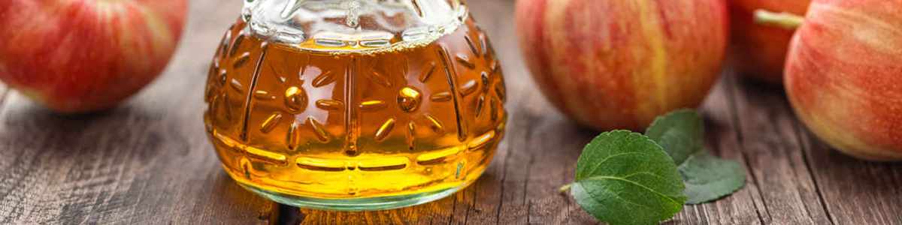
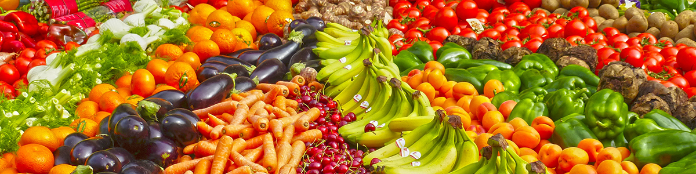
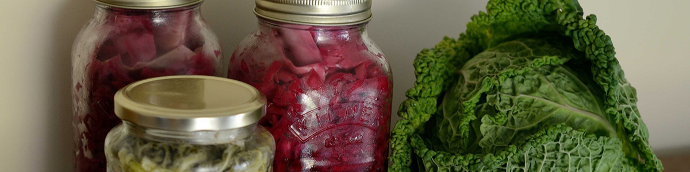
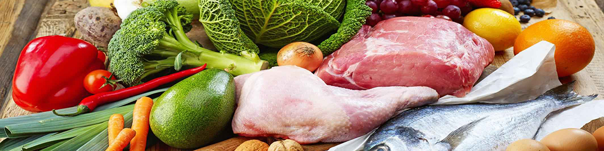

How To Burn Fat Fast
Original article from: www.healthline.com
Whether you’re looking to improve your overall health or simply slim down for summer, burning off excess fat can be quite challenging.
In addition to diet and exercise, numerous other factors can influence weight and fat loss.
Luckily, there are plenty of simple steps you can take to increase fat burning, quickly and easily.
Here are 14 of the best ways to burn fat quickly and promote weight loss. Strength training is a type of exercise that requires you to contract your muscles against resistance. It builds muscle mass and increases strength. Most commonly, strength training involves lifting weights to gain muscle over time. Research has found strength training to have multiple health benefits, especially when it comes to burning fat. In one study, strength training reduced visceral fat in 78 people with metabolic syndrome. Visceral fat is a type of dangerous fat that surrounds the organs in the belly. Another study showed that 12 weeks of strength training paired with aerobic exercise was more effective at reducing body fat and belly fat than aerobic exercise alone. Resistance training may also help preserve fat-free mass, which can increase the number of calories your body burns at rest. According to one review, 10 weeks of resistance training could help increase calories burned at rest by 7% and may reduce fat weight by 4 pounds (1.8 kg). Doing body-weight exercises, lifting weights or using gym equipment are a few easy ways to get started with strength training. Summary Strength training has been shown to increase resting energy expenditure and reduce belly fat, especially when combined with aerobic exercise.

Including more protein-rich foods in your diet is an effective way to reduce your appetite and burn more fat. In fact, multiple studies have found that eating more high-quality protein is associated with a lower risk of belly fat. One study also showed that a high-protein diet can help preserve muscle mass and metabolism during weight loss. Upping your protein intake may also increase feelings of fullness, decrease appetite and reduce calorie intake to aid in weight loss. Try incorporating a few servings of high-protein foods into your diet each day to help amp up fat burning. Some examples of protein-rich foods include meat, seafood, eggs, legumes and dairy products. Summary Eating more protein may be associated with a lower risk of belly fat. Increasing your protein intake can decrease appetite, lower calorie intake and preserve muscle mass.
Going to bed a bit earlier or setting your alarm clock a little later can help boost fat burning and prevent weight gain. Several studies have found an association between getting enough sleep and weight loss. One study of 68,183 women showed that those who slept five or fewer hours per night over a period of 16 years were more likely to gain weight than those who slept for longer than seven hours per night. Another study showed that better sleep quality and getting at least seven hours of sleep per night increased the likelihood of successful weight loss by 33% in 245 women enrolled in a six-month weight loss program. Other research shows that a lack of sleep may contribute to alterations in hunger hormones, increased appetite and a higher risk of obesity. Although everyone needs a different amount of sleep, most studies have found that getting at least seven hours of sleep per night is associated with the most benefits when it comes to body weight. Stick to a regular sleep schedule, limit your intake of caffeine and minimize your use of electronic devices before bed to help support a healthy sleep cycle. Summary Getting enough sleep may be associated with decreased appetite and hunger, as well as a lower risk of weight gain.

Vinegar is well-known for its health-promoting properties. In addition to its potential effects on heart health and blood sugar control, increasing your intake of vinegar may help bump up fat burning, according to some research. One study found that consuming 1–2 tablespoons (15–30 ml) of vinegar daily reduced people’s body weight, belly fat and average waist circumference over a 12-week period. Consuming vinegar has also been shown to enhance feelings of fullness and reduce appetite. Another small study of 11 people showed that adding vinegar to the diet reduced daily calorie intake by up to 275 calories.
It’s easy to incorporate vinegar into your diet. For example, many people dilute apple cider vinegar with water and drink it as a beverage a few times per day with meals. However, if drinking vinegar straight doesn’t sound appealing, you can also use it to make dressings, sauces and marinades.
Summary Vinegar may help increase feelings of fullness, decrease calorie intake and lower body fat.
Although it may seem counter intuitive, increasing your intake of healthy fats may actually help prevent weight gain and help you maintain feelings of fullness. Fat takes a while to digest and can help slow the emptying of the stomach, which can reduce appetite and hunger. One study found that following a Mediterranean diet rich in healthy fats from olive oil and nuts was associated with a lower risk of weight gain compared to a low-fat diet. Another small study found that when people on a weight loss diet took two tablespoons (30 ml) of coconut oil daily, they lost more belly fat than those who were given soybean oil. Meanwhile, unhealthy types of fat like trans fats have been shown to increase body fat, waist circumference and belly fat in human and animal studies. Olive oil, coconut oil, avocados, nuts and seeds are just a few examples of healthy types of fat that may have beneficial effects on fat burning. However, keep in mind that healthy fat is still high in calories, so moderate how much you consume. Instead of eating more fat overall, try swapping the unhealthy fats in your diet for these healthy fat varieties. Summary Fat is digested slowly, so eating it can help reduce appetite. A higher intake of healthy fats is associated with a lower risk of weight gain and decreased belly fat.
Swapping out sugar-sweetened drinks for some healthier selections is one of the easiest ways to increase fat burning. For example, sugar-sweetened beverages like soda and juice are packed with calories and offer little nutritional value. Alcohol is also high in calories and has the added effect of lowering your inhibitions, making you more likely to overeat. Studies have found that consuming both sugar-sweetened beverages and alcohol is associated with a higher risk of belly fat. Limiting your intake of these beverages can help reduce your calorie intake and keep your waistline in check. Instead, opt for calorie-free beverages like water or green tea. In one small, 12-week study, drinking 17 ounces (500 ml) of water before meals increased weight loss by 4.4 pounds (2 kg), compared to a control group. Green tea is another great option. It contains caffeine and is rich in antioxidants, both of which may help increase fat burning and enhance metabolism. For instance, one study in 12 adults showed that green tea extract increased fat burning by 12% compared to a placebo. Trading in even just one or two servings of high-calorie beverages for a glass of water or a cup of green tea is a simple way to promote fat burning. Summary Sugar-sweetened beverages and alcoholic drinks may be associated with a higher risk of belly fat. Green tea and water have been shown to increase weight loss and fat burning.

Soluble fiber absorbs water and moves through the digestive tract slowly, helping you feel fuller for longer. According to some studies, increasing your intake of high-fiber foods may protect against weight gain and fat accumulation. One study of 1,114 adults found that for each 10-gram increase in soluble fiber intake per day, participants lost 3.7% of their belly fat over a five-year period, even without any other changes in diet or exercise. Another review also found that increasing fiber intake promoted feelings of fullness and decreased hunger. In fact, an increase of 14 grams of fiber per day was associated with a 10% decrease in calorie intake. Not only that, but it was also linked to nearly 4.4 pounds (2 kg) of weight loss over a four-month period. Fruits, vegetables, legumes, whole grains, nuts and seeds are a few examples of high-fiber foods that can boost fat burning and weight loss. Summary A higher intake of fiber may be associated with fat loss, decreased calorie intake and greater weight loss.
Decreasing your intake of refined carbohydrates may help you lose extra fat. During processing, refined grains are stripped of their bran and germ, resulting in a final product that’s low in fiber and nutrients. Refined carbs also tend to have a higher glycemic index, which can cause spikes and crashes in blood sugar levels, resulting in increased hunger. Studies show that a diet high in refined carbs may be associated with increased belly fat. Conversely, a diet high in whole grains has been associated with a lower body mass index and body weight, plus a smaller waist circumference. One study in 2,834 people also showed that those with higher intakes of refined grains tended to have a higher amount of disease-promoting belly fat, while those who ate more whole grains tended to have a lower amount. For the best results, reduce your intake of refined carbs from pastries, processed foods, pastas, white breads and breakfast cereals. Replace them with whole grains such as whole wheat, quinoa, buckwheat, barley and oats. Summary Refined carbs are low in fiber and nutrients. They may increase hunger and cause spikes and crashes in blood sugar levels. Consuming refined carbs has also been associated with increased belly fat.
Cardio, also known as aerobic exercise, is one of the most common forms of exercise and is defined as any type of exercise that specifically trains the heart and lungs. Adding cardio to your routine may be one of the most effective ways to enhance fat burning. For example, one review of 16 studies found that the more aerobic exercise people got, the more belly fat they lost. Other studies have found that aerobic exercise can increase muscle mass and decrease belly fat, waist circumference and body fat. Most research recommends between 150–300 minutes of moderate to vigorous exercise weekly, or roughly 20–40 minutes of cardio each day. Running, walking, cycling and swimming are just a few examples of some cardio exercises that can help burn fat and kick-start weight loss.
Summary Studies show that the more aerobic exercise people get, the more belly fat they tend to lose. Cardio may also help reduce waist circumference, lower body fat and increase muscle mass.
Caffeine is a primary ingredient in just about every fat-burning supplement, and for good reason. The caffeine found in coffee acts as a central nervous system stimulant, increases metabolism and boosts the breakdown of fatty acids. In fact, studies show that caffeine intake can temporarily increase energy expenditure and enhance metabolism by 3–11%. One large study with over 58,000 people found that increased caffeine intake was associated with less weight gain over a 12-year period. Another study found that higher caffeine intake was linked to a higher rate of success with weight loss maintenance among 2,623 people. To maximize the health benefits of coffee, skip the cream and sugar. Instead, enjoy it black or with a small amount of milk to prevent the extra calories from stacking up. Summary Coffee contains caffeine, which can increase the breakdown of fat and raise metabolism. Studies show that higher caffeine intake may be associated with greater weight loss.
High-intensity interval training, also known as HIIT, is a form of exercise that pairs quick bursts of activity with short recovery periods to keep your heart rate elevated. Studies show that HIIT can be incredibly effective at ramping up fat burning and promoting weight loss. One study found that young men performing HIIT for 20 minutes three times weekly lost an average of 4.4 pounds (2 kg) of body fat over a 12-week period, even with no other changes to their diet or lifestyle. They also experienced a 17% reduction in belly fat as well as a significant decrease in waist circumference. HIIT may also help you burn more calories in a shorter amount of time than other forms of cardio. According to one study, performing HIIT helped people burn up to 30% more calories than other types of exercise, such as cycling or jogging, in the same amount of time. For an easy way to get started with HIIT, try alternating between walking and jogging or sprinting for 30 seconds at a time. You can also cycle between exercises like burpees, push-ups or squats with a short rest period in between. Summary HIIT can help increase fat burning and burn more calories in a shorter amount of time than other forms of exercise.

Probiotics are a type of beneficial bacteria found in your digestive tract that have been shown to improve many aspects of health. In fact, the bacteria in your gut have been shown to play a role in everything from immunity to mental health. Increasing your intake of probiotics through either food or supplements may also help rev up fat burning and keep your weight under control. One review of 15 studies showed that people who took probiotics experienced significantly larger reductions in body weight, fat percentage and body mass index compared to those who took a placebo. Another small study showed that taking probiotic supplements helped people following a high-fat, high-calorie diet prevent fat and weight gain. Certain strains of probiotics in the genus Lactobacillus may be especially effective at aiding weight and fat loss. One study in 28 people showed that eating yogurt containing either Lactobacillus Fermentum or Lactobacillus Amylovorus bacteria reduced body fat by 3–4%. Taking supplements is a quick and easy way to get in a concentrated dose of probiotics every day. Alternatively, you can try adding some probiotic-rich foods to your diet, such as kefir, tempeh, natto, kombucha, kimchi and sauerkraut. Summary Taking probiotic supplements or increasing your intake of probiotics through food sources may help reduce body weight and fat percentage.

Iron is an important mineral that has many vital functions in the body. As with other nutrients such as iodine, a deficiency in iron may impact the health of your thyroid gland. This small gland in your neck secretes hormones that regulate your metabolism. Multiple studies have found that low levels of iron in the body may be associated with impaired thyroid function and a disruption in the production of thyroid hormones. Common symptoms of hypothyroidism, or decreased thyroid function, include weakness, fatigue, shortness of breath and weight gain. Similarly, a deficiency in iron can cause symptoms like fatigue, dizziness, headaches and shortness of breath. Treating iron deficiency can allow your metabolism to work more efficiently and can fight off fatigue to help increase your activity level. One study even found that when 21 women were treated for iron deficiency, they experienced reductions in body weight, waist circumference and body mass index. Unfortunately, many people don’t get enough iron in their diets. Women, infants, children, vegans and vegetarians are all at a higher risk of iron deficiency. Be sure to incorporate plenty of iron-rich foods in your diet to help meet your iron needs and maintain your metabolism and energy levels. You can find iron in meat, poultry, seafood, fortified grains and cereals, leafy green vegetables, dried fruits and beans.
Summary A deficiency in iron may be associated with impaired thyroid function and can cause symptoms like fatigue and shortness of breath. One study found that treating iron deficiency aided in weight loss.
Intermittent fasting is a diet pattern that involves cycling between periods of eating and fasting. Research shows that intermittent fasting may help enhance both weight loss and fat loss. One review looked at the effects of intermittent fasting, including alternate-day fasting — a method that involves alternating between days of fasting and eating normally. They found that alternate-day fasting over a period of 3–12 weeks reduced body weight by up to 7% and decreased body fat by up to 12 pounds (5.5 kg). Another small study showed that eating only during an eight-hour window each day helped decrease fat mass and maintain muscle mass when combined with resistance training. There are several different types of intermittent fasting, including some where you eat only on certain days of the week and others where eating is restricted to specific hours of the day. Popular types of intermittent fasting include Eat Stop Eat, the Warrior Diet, the 16/8 method and the 5:2 diet. Find a variation that fits in with your schedule and lifestyle and don’t be afraid to experiment to find what works best for you. Summary Intermittent fasting has been shown to reduce body weight and body fat and may help preserve muscle mass when combined with resistance training.
There are plenty of options available to help you shed excess fat and improve your health. Incorporating some healthy habits into your routine and switching up your diet can make a big difference. Even minor changes to your lifestyle can have powerful effects on fat burning. Be sure to pair these simple tips with a nutritious, well-rounded diet and active lifestyle to simultaneously boost fat breakdown and improve your overall health.